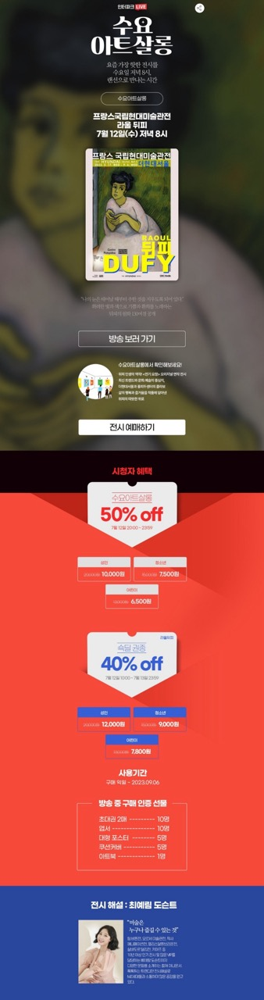
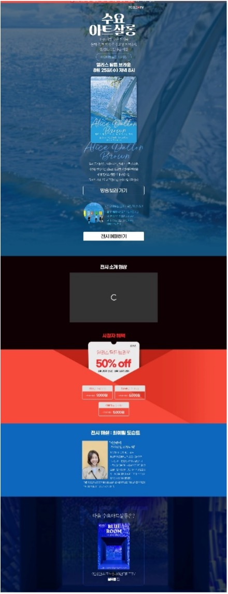

Live Commerce
라이브커머스 기획
국내 최초 전시 라이브커머스부터 MBTI 여행까지 — 트렌드를 읽고, 포맷을 만들었습니다.


기획전 페이지 제작
라이브커머스 방송과 연동되는 전시 기획전 페이지를 직접 제작했습니다. 작품 해설, 작가 소개, 구매 포인트를 하나의 흐름으로 엮은 구성으로 — 미술 기자 시절의 편집 감각을 콘텐츠 마케팅에 적용한 결과물입니다.


MBTI 연구소
한국 사회의 MBTI 열풍을 여행 상품 판매와 연결했습니다. 유형별 여행 스타일을 분석하고 맞춤 상품을 큐레이션하는 라이브커머스를 기획·진행했습니다.